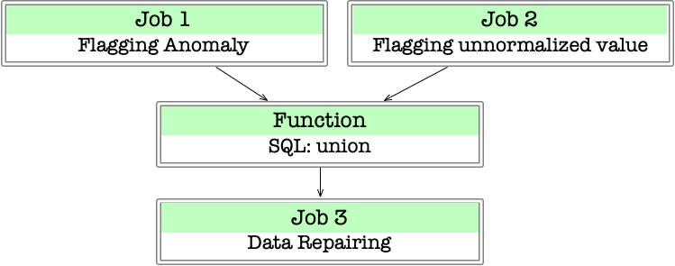

Cymphony at a Glance¶
Cymphony is an open-source crowdsourcing platform. It provides the following features:
Flexibile definition of workflows consisting of multiple microtasks.
Easy invitation of workers using their emails.
Open-source software (APACHE 2.0 License) with well abstracted APIs such that developers can fully optimize the system for their specific applications, such as how to assign tasks and how to aggregate the annotations from different workers.
Below is a set of motivating samples, mainly for data preparation, that need collaboration and where Cymphony could help:
[Information extraction]: Given a table where each tuple describes a product, the goal is to extract the weight from the title of the product, such as “3.5kg” from “Sony radio X67 3.5kg black”. We want to use multiple workers for this task.
[Data cleaning]: Given a table with a column
City, we want a bunch of workers to help clean its value, such as “New Yurk” to “New York”; similarly, we may want a bunch of workers to help normalize its values, such as “NY” and “NYC” to “New York City”. In another task, an algorithm detects multiple synonyms for missing values for a columntemperature, and we want to have a bunch of workers examine these synonym candidates and select the correct ones.[Data labeling]: We need a set of workers to label tuple pairs Match/Non-Match for entity matching, or to label a set of examples Yes/No for some classification task.
Basic Terminologies¶
There are some basic terms that are important to understand Cymphony.
A worker is a collaboration/crowd worker.
A requester is the end user who wants to specify and execute a collaboration application, such as annotating missing values, labeling tuples, and so on.
A task is an object (e.g., a tuple) with a description about what annotation is needed, where an annotation can be one of the following types:
Boolean: True/False
Numeric: a numeric value
String: a set of characters
Enumeration: a value from a set of predefined values (such as for card suit or color)
Each task can be done by one worker, taking anywhere from a few seconds to a few minutes. Each task will be assigned to one or more workers, and each worker will produce an annotation.
A label of a task is the “final annotation” that is aggregated (e.g., using majority voting) from the workers who annotate this task.
A hit is a set of tasks that a worker takes to annotate as a mini-batch.
A job is a collection of tasks. We assume that all objects in one job follow the same schema (e.g., the same relational schema).
A workflow consists of a collection of (human) jobs and a set of machine algorithms (e.g., SQL queries, sampling functions, or any other user defined function).
A Cymphony Job¶
Generally speaking, a Cymphony job includes the following steps:
[Data preparation]: obtain from a requester tasks and workers who are invited by the requester through emails
[Assignment]: assign workers to tasks
[Annotate]: allow annotations by workers
[Aggregate]: aggregate annotations to produce a label for each task.
In an abstract level, each job consists of three core functions, Assignment(), Annotate(), and Aggregate(), as shown in the figure below.
{kind=link}
A Cymphony Workflow¶
A Cymphony workflow is a directed acyclic graph (DAG) where each node is either a (human) job node or a (machine) function node.
A sample workflow is given below. It has three jobs and one function.
We provide a graphical user interface (GUI) for a requester to specify a Cymphony workflow (see the tutorial at Tutorial: Creating a Cymphony Project). For each job in the workflow, the requester will invite a group of workers by providing their email addresses.
{kind=link}